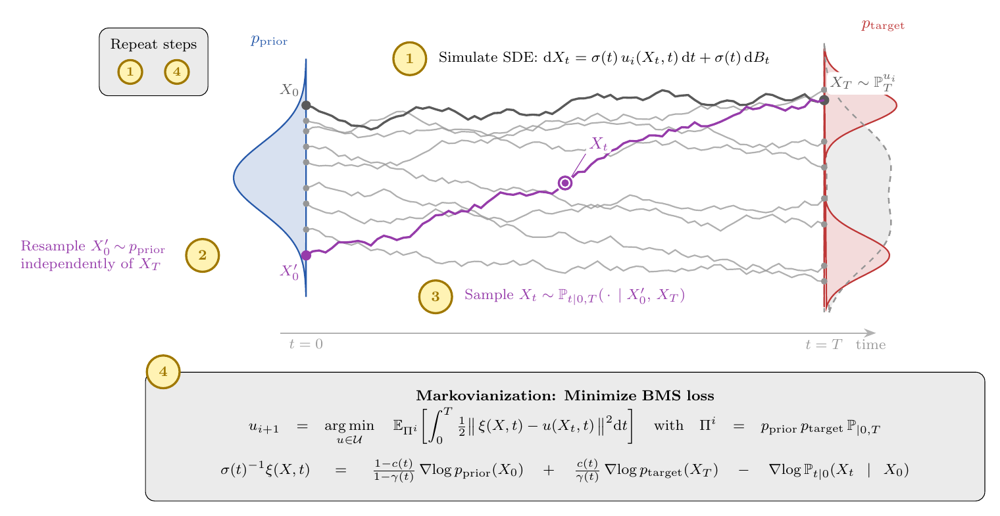

ICML 2026 · Seoul, South Korea
Bridge Matching Sampler
Scalable Sampling via Generalized Fixed-Point Diffusion Matching
1Karlsruhe Institute of Technology 2Zuse Institute Berlin 3dida 4NVIDIA

TL;DR
BMS learns a stochastic transport map from an arbitrary prior to an unnormalized target using a single, scalable least-squares objective and a damped fixed-point iteration. It needs only the target score (no samples, no importance weights), avoids the restrictive priors and unstable alternating optimization of prior bridge samplers, and scales to thousands of dimensions while preserving mode diversity.
Abstract
Sampling from unnormalized densities using diffusion models has emerged as a powerful paradigm. However, while recent approaches that use least-squares "matching" objectives have improved scalability, they often necessitate significant trade-offs, such as restricting prior distributions or relying on unstable optimization schemes. By generalizing these methods as special forms of fixed-point iterations rooted in Nelson's relation, we develop a new method that addresses these limitations, called Bridge Matching Sampler (BMS). Our approach enables learning a stochastic transport map between arbitrary prior and target distributions with a single, scalable, and stable objective. Furthermore, we introduce a damped variant of this iteration that incorporates a regularization term to mitigate mode collapse and further stabilize training. Empirically, we demonstrate that our method enables sampling at unprecedented scales while preserving mode diversity, achieving state-of-the-art results on complex synthetic densities and high-dimensional molecular benchmarks.
The method, step by step
We want to sample from a target \(p_\text{target}(x) = \rho(x)/\mathcal{Z}\) where we can evaluate \(\rho\) pointwise but the normalizer \(\mathcal{Z}\) is intractable. BMS learns a control \(u\) so that the controlled SDE with constant diffusion coefficient \(\sigma\)
$$\mathrm{d}X_t = \sigma\,u(X_t,t)\,\mathrm{d}t + \sigma\,\mathrm{d}B_t,\qquad X_0\sim p_\text{prior}$$has terminal marginal \(X_T \sim p_\text{target}\). The trick is to view this as a fixed-point iteration over path measures that alternates between building a valid bridge process and "Markovianizing" it. Each outer iteration is four steps.
-
1
Simulate & couple. Draw \(X_0\sim p_\text{prior}\) and integrate the current control to its endpoint \(X_T\). Then pair \(X_T\) with a fresh, independent prior sample \(X_0'\sim p_\text{prior}\) — the BMS independent coupling \(\Pi^i_{0,T}=p_\text{prior}\otimes\mathbb{P}^{u_i}_T\).
-
2
Bridge in closed form. Conditioned on \((X_0',X_T)\), sample an intermediate state \(X_t\) from the Brownian bridge \(\mathbb{P}_{t\mid 0,T}\) directly — no trajectory storage: $$X_t \sim \mathcal{N}\!\Big((1-\gamma_t)\,X_0' + \gamma_t\,X_T,\; \sigma^2\,\frac{t(T-t)}{T}\Big),\quad \gamma_t=\frac{t}{T}.$$
-
3
Target drift (generalized target score identity). The path-dependent drift that induces the target path measure is available in closed form from only the prior and target scores: $$\sigma^{-1}\,\xi(X,t)=\frac{1-c(t)}{1-\gamma_t}\,\nabla\!\log p_\text{prior}(X_0)\;+\;\frac{c(t)}{\gamma_t}\,\nabla\!\log p_\text{target}(X_T)\;-\;\nabla\!\log \mathbb{P}_{t\mid 0}(X_t\mid X_0).$$ where \(c(t)\in(0,1]\) is a free control variate and \(\mathbb{P}_{t\mid 0}\) is the forward reference transition \(X_t\mid X_0\sim\mathcal{N}(X_0,\sigma^2 t)\).
-
4
Markovianize. Regress a Markovian control onto the target drift with a plain least-squares loss — the conditional expectation \(\mathbb{E}_{\Pi^i}[\xi(X,t)\mid X_t=x]\). This defines the fixed-point operator \(\Phi\): $$u_{i+1}=\Phi(u_i):=\arg\min_{u}\;\mathbb{E}_{\Pi^i}\!\int_0^T \tfrac12\,\lVert \xi(X,t)-u(X_t,t)\rVert^2\,\mathrm{d}t.$$
Damping
Instead of applying the operator \(\Phi\) fully, BMS takes a damped step that pulls toward the previous iterate \(u_i\):
$$u_{i+1}=\alpha\,\Phi(u_i)+(1-\alpha)\,u_i,\qquad \eta=\frac{1-\alpha}{\alpha}.$$Equivalently, the regression gains an \(L^2\) penalty \(\eta\,\lVert u-u_i\rVert^2\) toward \(u_i\). This reduces the variance of each update, prevents mode collapse, and is decisive in high dimensions. You can feel exactly what \(\eta\) does in the live sampler below.
Interactive · Watch the fixed point converge
This is a real, in-browser 1D Bridge Matching Sampler — the same scheme as the paper. The prior is \(\mathcal{N}(0,1)\) (blue); the target is a bimodal density (red). Each Step runs one full outer iteration: simulate, form the independent coupling, sample bridges, and Markovianize the control via a conditional-expectation regression. The left panel shows the learned drift field \(u(x,t)\) with a few transported trajectories; the right panel shows the terminal samples \(X_T\) against the target.
Try it: set \(\eta=0\) (no damping) and Play — the updates jump around and can tilt toward one mode. Now raise \(\eta\) and Reset — convergence is smooth and both modes stay populated. That is the damped fixed point.
Citation
@inproceedings{blessing2026bridge,
title = {Bridge Matching Sampler: Scalable Sampling via Generalized Fixed-Point Diffusion Matching},
author = {Blessing, Denis and Richter, Lorenz and Berner, Julius and Malitskiy, Egor and Neumann, Gerhard},
booktitle = {Proceedings of the 43rd International Conference on Machine Learning (ICML)},
year = {2026},
}